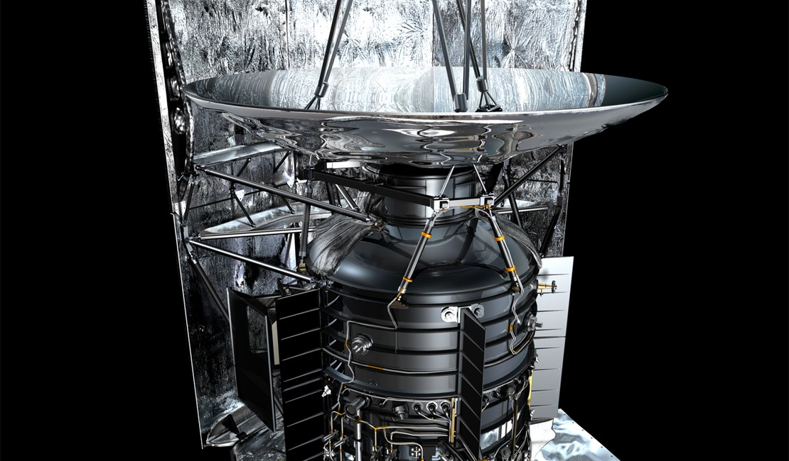
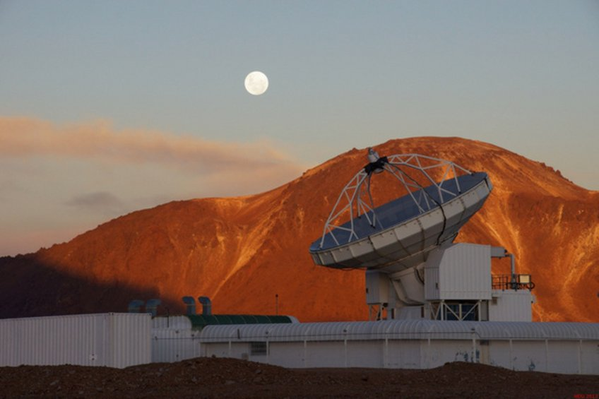
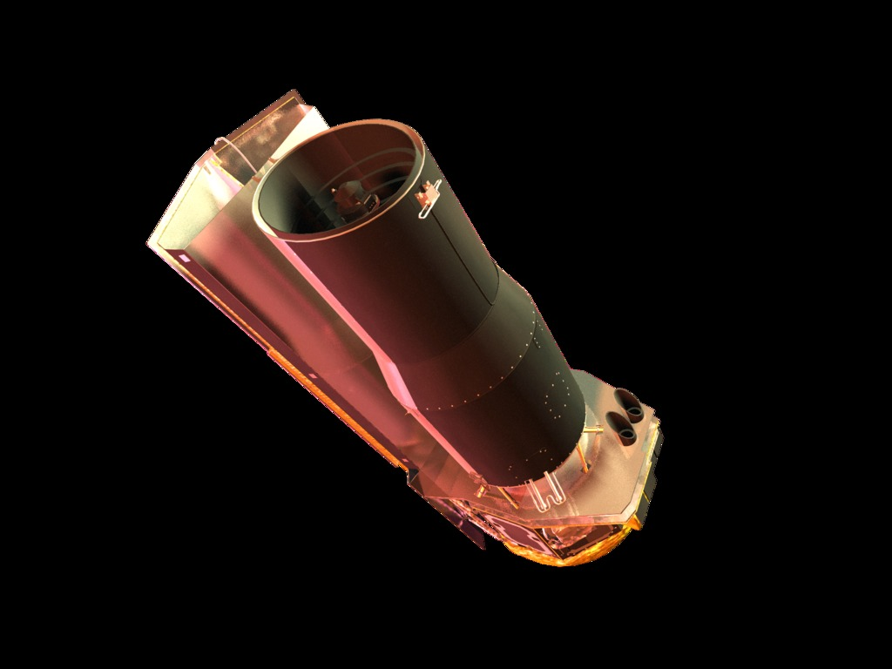
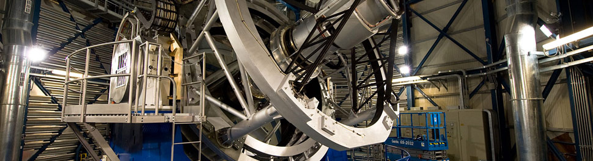
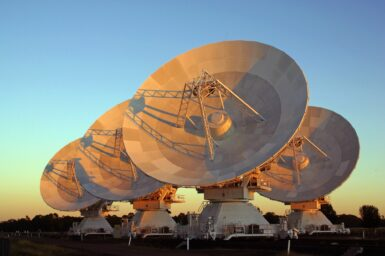
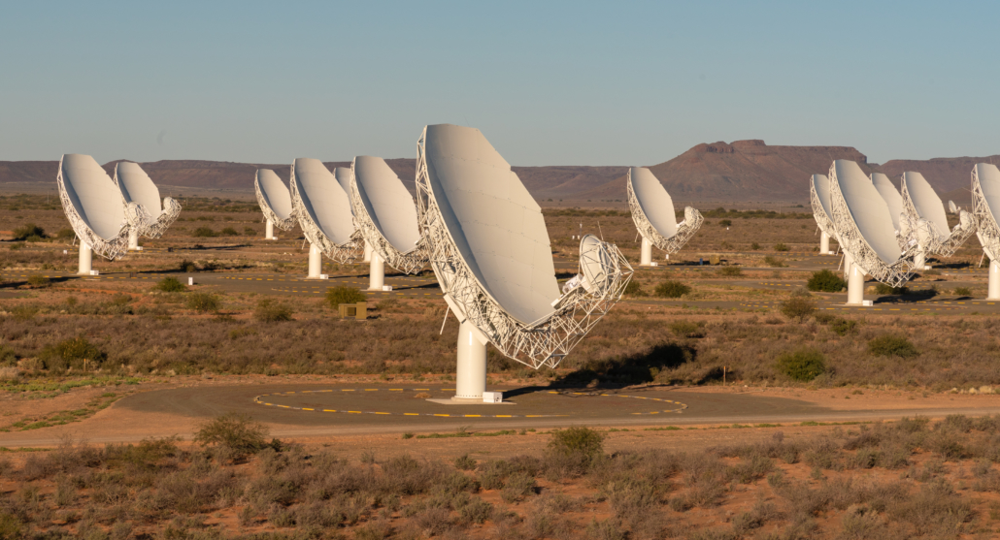
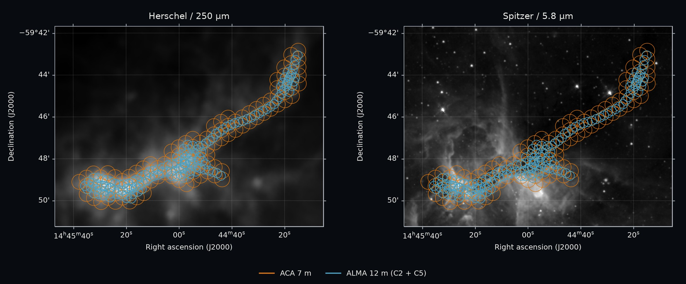

Collecting
faint light.
Complementary telescopes connect the extended reservoir to the compact structures within it.

Herschel
PACS and SPIRE dust maps set the temperature and column density of the whole cloud.
Image: ESA / AOES Medialab · artist’s impression
APEX
ArTéMiS sharpens the cold-dust structure; nFLASH230 lines probe the molecular gas.
Image: MPIfR
Spitzer
GLIMPSE images reveal infrared-dark gas, embedded sources and the bright H II regions.
Image: NASA / JPL-Caltech / R. Hurt (SSC) · artist’s impression
VISTA
VVV J, H and Kₛ images trace stars and extinction from the dark north to the H II regions.
Image: ESO
ATCA
CORNISH-South maps the ionized gas at 2.5″, constraining free-free emission at 1.3 mm.
Image: CSIRO
MeerKAT
The Galactic Plane Survey maps the extended radio continuum; with ATCA it fixes the free-free part.
Image: SARAOThe invisible, revealed.


Entire filament, fully covered.

Recovering the full picture.
Our continuum workflow combines the ALMA 12 m and ACA 7 m images with a total-power model of the extended emission, in the Fourier (uv) plane. Each step below shows the evidence behind the resulting image.
01 / Pointings and spatial-frequency coverage
Each array samples a different range of spatial frequencies. The total-power (TP) model fills the shortest spacings that no interferometer measures, and the combined image follows the TP model on large scales and the interferometers on small ones.

02 / Combining arrays and restoring extended emission
From individual arrays to the fully combined continuum: compare compact structure and extended emission across the full filament.


Resolving the gas in velocity.
The ACA setup documented in Paper I combines six narrow windows with two broad windows. The table lists the dedicated targets and selected candidate lines within the broad-window coverage; coverage does not imply detection. Rest frequencies and observing-window centres are shown separately.
| Molecule / transition | Rest frequency (GHz) | Window centre (GHz) | Channel spacing (kHz) | Velocity spacing (km/s) | Nominal resolution¹ (km/s) |
|---|---|---|---|---|---|
| Dedicated narrow windows | |||||
| H₂CO 3₀₃–2₀₂ | 218.222 | 218.248 | 61 | 0.084 | 0.168 |
| H₂CO 3₂₂–2₂₁ | 218.476 | 218.484 | 61 | 0.084 | 0.167 |
| C¹⁸O 2–1 | 219.560 | 219.587 | 61 | 0.083 | 0.167 |
| CO 2–1 | 230.538 | 230.565 | 61 | 0.079 | 0.159 |
| ¹³CS 5–4 | 231.220 | 231.249 | 61 | 0.079 | 0.158 |
| N₂D⁺ 3–2 | 231.322 | 231.350 | 61 | 0.079 | 0.158 |
| Broad window 1 / 215.795–217.670 GHz (1.875 GHz bandwidth) | |||||
| DCO⁺ 3–2 | 216.113 | 216.732 | 488 | 0.677 | 1.354 |
| SiO 5–4 | 217.105 | 216.732 | 488 | 0.674 | 1.348 |
| DCN 3–2 | 217.239 | 216.732 | 488 | 0.673 | 1.347 |
| Broad window 2 / 230.003–231.878 GHz (1.875 GHz bandwidth) | |||||
| CO 2–1 | 230.538 | 230.940 | 488 | 0.635 | 1.269 |
| OCS 19–18 | 231.061 | 230.940 | 488 | 0.633 | 1.266 |
Broad-window ranges are nominal; usable coverage depends on Doppler shifts and edge flagging. CO 2–1 is also covered by a dedicated narrow window with finer spectral sampling.
¹ Velocity spacing is calculated as c Δν/ν using the channel widths reported in Paper I. Nominal resolution assumes Hanning smoothing without channel averaging (twice the channel spacing); the effective resolution of delivered cubes depends on the actual averaging, smoothing, and regridding.
Science with a traceable workflow.
The Python package, the runnable tasks and their documentation live together in the repository. Data-dependent tasks require their declared local inputs; observational data are not bundled with the code.
python -m pip install -e ".[dev]"
PYTHONPATH=src python tasks/combine_continuum/run.py --stage inspect